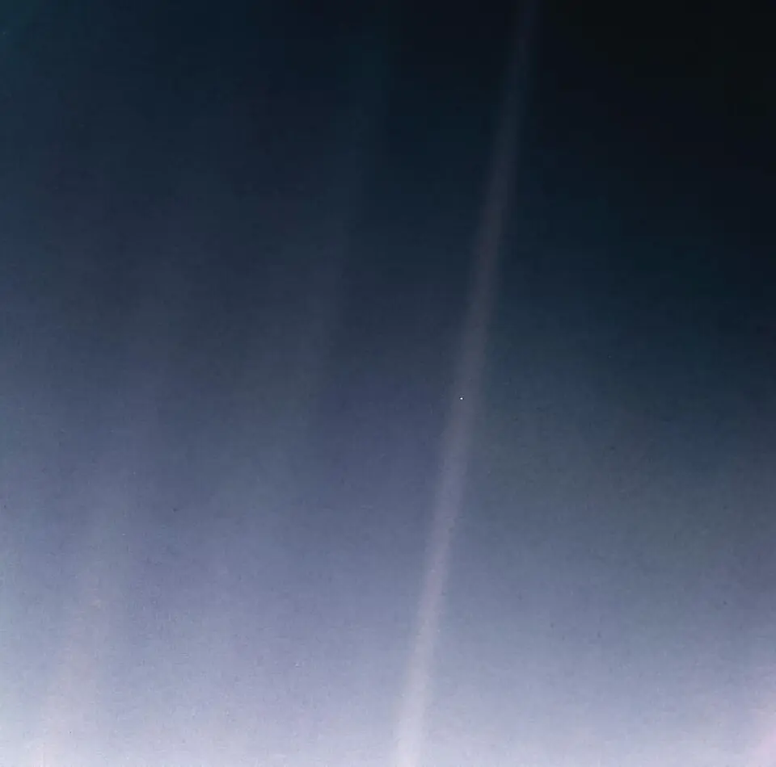
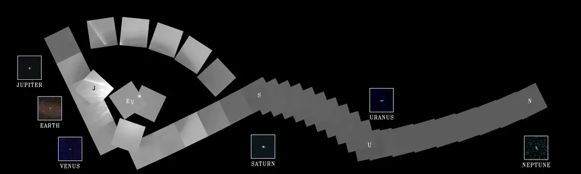
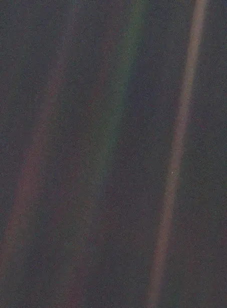
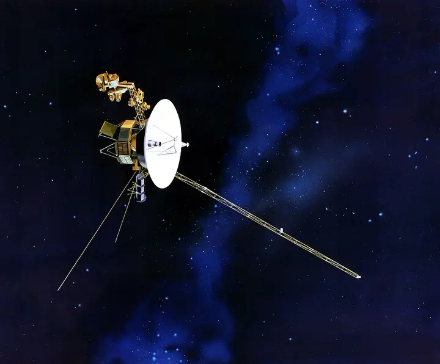

Pale Blue Dot
Start at your desk. Zoom out through your classroom, your school, your town, your country — off the Earth entirely, past every planet, until home is a single pale blue dot suspended in a sunbeam. Press Start Journey and hold on.
"Look again at that dot. That's here. That's home. That's us."
"On it everyone you love, everyone you know, everyone you ever heard of, every human being who ever was, lived out their lives."
"The aggregate of our joy and suffering, thousands of confident religions, ideologies, and economic doctrines, every hunter and forager, every hero and coward, every creator and destroyer of civilization — every king and peasant, every young couple in love, every mother and father, hopeful child, inventor and explorer, every teacher of morals, every corrupt politician, every 'superstar,' every 'supreme leader,' every saint and sinner in the history of our species lived there."
"On a mote of dust suspended in a sunbeam."
— Carl Sagan, Cornell University, 1994
February 14, 1990 · about 6 billion km from the Sun
The Day We Turned Around and Looked
Voyager 1 had been flying for 12 years. It had already passed Jupiter and Saturn and was climbing out of the solar system, about 32° above the flat plane where the planets orbit. Carl Sagan, a scientist on the imaging team, had been asking NASA for years to do something that had no scientific payoff: turn the spacecraft around and photograph the planets from the outside.
Engineers were worried. Pointing the camera back toward the Sun risked burning out its detector. The mission had no more planets to visit, and the team that ran the cameras was about to be reassigned. Sagan persuaded NASA to try once.
On Valentine's Day 1990, from about 40 AU away, Voyager 1 took 60 frames to make a mosaic called the Family Portrait. Earth is in one of them: a speck smaller than a single pixel (0.12 pixels), sitting inside a streak of light.
That streak is not a sunbeam in space. It is a lens flare: sunlight bouncing around inside the camera because the Sun was so close to the edge of the view. Earth sits in it by chance. Minutes after the last frame, the cameras were switched off to save power and memory, and they have never been turned on again. These were Voyager's last pictures.

Can you find Earth before you press the button? Click the photo to enlarge it. Reprocessed in 2020 by NASA/JPL-Caltech from the original 1990 data. Public domain.
"Our planet is a lonely speck in the great enveloping cosmic dark. In our obscurity, in all this vastness, there is no hint that help will come from elsewhere to save us from ourselves. The Earth is the only world known so far to harbor life. There is nowhere else, at least in the near future, to which our species could migrate. Visit, yes. Settle, not yet. Like it or not, for the moment the Earth is where we make our stand."— Carl Sagan, Pale Blue Dot: A Vision of the Human Future in Space, 1994
The rest of the photo album
One Family Portrait, Six Planets
The Pale Blue Dot is one frame of a larger mosaic. Six planets made it into the portrait. Mercury was too close to the Sun to see, Mars was lost in sunlight scattered inside the camera, and Pluto was too small and dim. Click any image to enlarge it.



Live · computed from today's date
Where Is Voyager 1 Right Now?
Voyager 1 is still flying and still talking to us. It left the Sun's bubble, the heliopause, in August 2012, and is now in interstellar space.
Why does the number sometimes barely change for months? Voyager moves away from the Sun at about 17 km every second, but Earth also circles the Sun at 30 km/s. For part of each year Earth swings toward Voyager and catches up a little, and for the rest of the year it swings away. Numbers here are a model built from NASA's figures and are accurate to within about a percent.
Build it in your head
Shrink the Solar System
The zoom above uses powers of ten, which hides how empty space is. Pick something small to be Earth, and every other distance shrinks by the same amount.
Predict first: with Earth as a peppercorn on your desk, how far away is Voyager 1? Across the room? Across the school? Write your guess down, then reveal the table.
| Object | Size in the model | Distance from Earth |
|---|
Check the model
Is This Zoom to Scale?
Mostly, yes. Every distance and width in the zoom is real, but a few things have to be drawn bigger or simpler than life so you can see them. Here is exactly what is real and what isn't.
- RealThe view width, the scale bar and the light-travel time are real at every step. Each notch of the slider multiplies the width by the same amount, so the zoom covers 27 powers of ten, from a 1.5-metre desk to the observable universe.
- RealThe planets, Pluto, the Moon, Voyager 1 and the James Webb Space Telescope are drawn where they are today, at their true distances, seen from above the plane of Earth's orbit.
- Real places, sample dotsThe asteroid belt (with Jupiter's Trojan asteroids 60° ahead of and behind Jupiter) and the Kuiper Belt are the right size and in the right place. Each dot stands in for many thousands of rocks or iceballs, and the dots themselves are placed at random.
- ApproximateVoyager 1's dashed path runs through its real flybys of Jupiter and Saturn, with a marker where it took the Pale Blue Dot photo. Voyager 2, New Horizons and the two silent Pioneers are placed from their direction, distance and speed. The paths are drawn straight between flybys; the real ones curve.
- Measured nose, modeled tailBoth Voyagers measured where the heliopause is on the front side of the Sun's bubble: about 120 AU. No spacecraft has visited the long tail, so its shape comes from computer models.
- EnlargedAnything smaller than a pixel is drawn as a small dot. At the Pale Blue Dot moment even Jupiter is only about a hundredth of a pixel wide, and Earth's dot is drawn thousands of times too big. (In Voyager's real photo, Earth covered 0.12 of a pixel.)
- RecreatedThe light streaks are a recreation of the lens flare in Voyager's camera. They were never in space.
- RealThe stars and nebulae, from Proxima Centauri out to Omega Centauri, sit at their measured distances and directions. So do the Local Group galaxies and the nearby galaxy groups and clusters, from the M81 Group to the Coma Cluster and the Shapley Supercluster. The dots inside each cluster are a sample, not individual galaxies.
- PredictedThe Oort Cloud has never been seen directly. Astronomers infer it from the paths of long-period comets.
- Artist's mapNo one has photographed the Milky Way from outside. Its size (about 100,000 light-years), its central bar, its main arms and the Sun's place on the small Orion Spur (26,000 light-years from the center) come from measurements, but the picture itself is an illustration.
- SimplifiedLaniakea, our home supercluster, is drawn at its real size, about 520 million light-years across, but its outline is smoothed. Its real edge is defined by which way galaxies are flowing, not by a wall.
- Typical patternThe cosmic web shows realistic void sizes, roughly 30 to 300 million light-years, but it is not a map of real galaxies.
- HorizonThe observable universe is a sphere centered on us. Its edge is the oldest light we can see, the cosmic microwave background, sent out 13.8 billion years ago. Space has stretched since then, so that edge is now about 46 billion light-years away in every direction. The whole universe is bigger, and may have no edge at all. The tiny hot and cold patches drawn along the edge are an illustration.
- FlattenedReal space is three-dimensional. This zoom flattens everything onto one plane, like a map.
Talk it over
Discussion Questions
- ObserveFind Earth in the photo without help. What made it hard? What would the photo look like if the camera had no lens flare?
- ReasonEarth looks blue from space because air scatters blue sunlight more than red (Rayleigh scattering). What color might a planet with no atmosphere look from far away? Use the Moon as a clue.
- DecideThe photo had no scientific value, and the cameras were switched off right after it. Was it worth it? What would you have pointed the last pictures at?
- ScaleVoyager 1 is now about 170 AU away and has been flying for nearly 50 years. The nearest star is about 268,000 AU away. Roughly how long would Voyager need to get there at the same speed?
- ReflectSagan saw the photo as a reason for humility and for taking care of each other. The writer of Psalm 8 looked at the night sky and asked, “What is man, that thou art mindful of him?” Both felt small. Did they reach the same conclusion? Does being small make a person matter less?